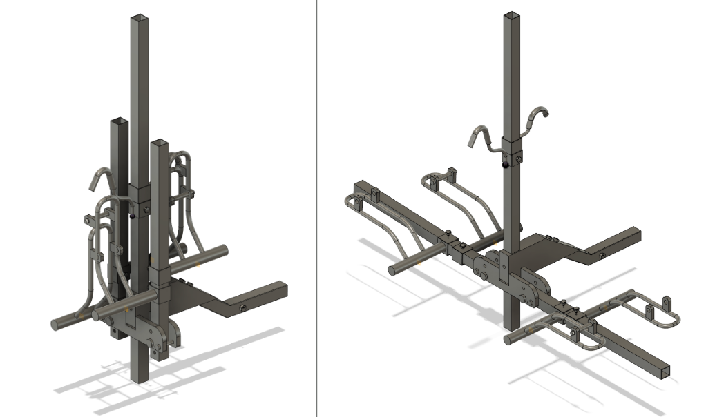
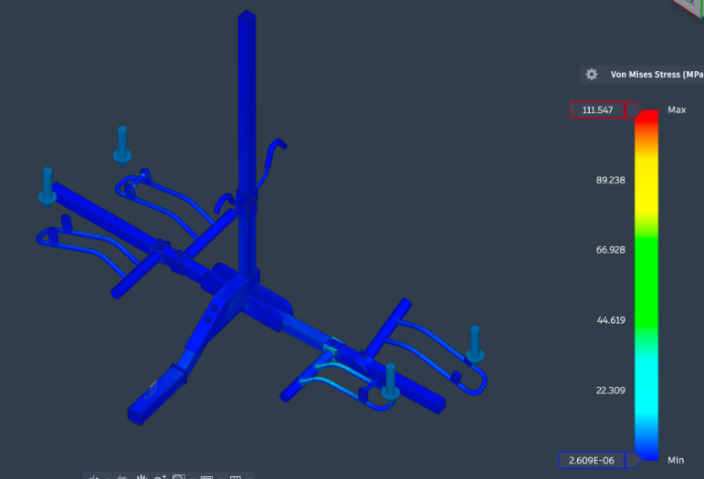

Our team designed a rack for a standard 2-inch receiver hitch that could carry two bikes and fold for storage. I worked on concept development, FEA, and materials. We selected a folding platform-tray design from four concepts, considering installation, bike-size compatibility, and storage space.

Static FEA identified a stress concentration at the hitch connection. We revised the geometry with support prongs and reinforced wheel-cradle arms. We also used aluminum for most components while retaining steel at the hitch joint.
The CAD-estimated assembly mass decreased from 80.2 to 27.6 kg, about 66%. These figures describe the model, not a weighed prototype. The stress plot below shows a maximum von Mises stress of 111.547 MPa for the displayed simulation. Loads, restraints, and material properties determine how that result should be interpreted.

We also developed a manufacturing and costing plan using CNC machining, tube bending, and robotic welding at a hypothetical 45,000-unit volume. This was a design exercise; no racks were manufactured.